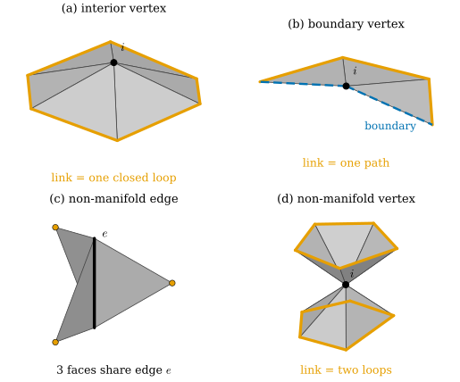
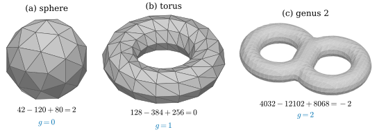
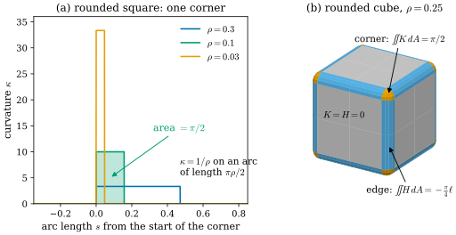

31.1 What Makes a Mesh a Surface
Goals
- triangle mesh를 vertex 위치와 연결 정보로 이루어진 piecewise-linear surface로 보고, tangent plane이 있는 곳(face 안)과 없는 곳(edge, vertex)을 구분할 수 있다.
- edge에 붙은 face의 수와 vertex의 link로 manifold 조건을 판정하고, non-manifold edge와 non-manifold vertex를 찾을 수 있다.
- 일관된 orientation이 무엇인지 설명하고, Möbius strip mesh에서 그것이 불가능한 이유를 말할 수 있다.
- \(\chi = n_0 - n_1 + n_2\)로 genus와 boundary의 수를 계산해 복원한 mesh의 topology를 점검하고, smooth surface의 curvature가 mesh에서는 edge와 vertex에 모인다는 것을 설명할 수 있다.
Prerequisites
- Section 0.3: regular surface(Definition 0.3.1), tangent plane과 unit normal vector(Definition 0.3.3)
- Section 0.5: Euler characteristic과 Gauss–Bonnet theorem(Theorem 0.5.8), mesh의 angle defect (0.5.4)
- Section 0.6: manifold는 모든 점 근처가 \(\R^n\)의 조각처럼 보이는 공간이다(Definition 0.6.1).
- Section 29.1: 납작한 Gaussian과 PCA의 normal은 부호가 정해지지 않는다.
Motivation
Chapter 30은 radiance field, SDF, Gaussian에서 surface를 정의하는 방법을 다룬다. 그 결과를 렌더러, 물리 시뮬레이터, 편집 도구로 넘길 때는 거의 언제나 triangle mesh로 바꾼다. 2DGS는 rendered depth를 TSDF로 합친 뒤 mesh를 꺼내고 [Huang24], SuGaR는 Poisson reconstruction으로 mesh를 만든다 [Guedon24]. mesh는 3D vision 파이프라인의 공용어다.
그런데 mesh는 regular surface가 아니다(Definition 0.3.1). 평평한 삼각형을 이어 붙였을 뿐이라 이계도함수가 없고, 따라서 Tour에서 본 curvature, Laplacian, Gauss–Bonnet theorem을 그대로 쓸 수 없다. 이 장은 그것들을 mesh 위에서 다시 세운다. 첫 절은 출발점이 되는 세 질문에 답한다.
- 삼각형들의 모임은 언제 “하나의 surface”인가? (manifold)
- 앞면과 뒷면, 곧 normal의 방향을 전체에서 일관되게 고를 수 있는가? (orientation)
- face 안은 평평한데, smooth surface의 curvature는 mesh의 어디로 갔는가?
A Mesh Is a Piecewise-Linear Surface
Definition 31.1.1 (triangle mesh). triangle mesh는 두 가지 자료로 이루어진다. 하나는 vertex의 위치 \(x_1, \dots, x_{n_0} \in \R^3\)이고, 다른 하나는 face의 목록이다. face는 서로 다른 세 vertex 번호의 순서쌍 \(ijk\)이고, face에 나타나는 두 vertex의 쌍 \(ij\)를 edge(모서리)라 한다. 이 장에서는 다음 두 가지를 가정한다.
- (1) 모든 face의 세 점 \(x_i, x_j, x_k\)는 한 직선 위에 있지 않다(퇴화한 삼각형이 없다).
- (2) 두 삼각형은 공통의 edge나 공통의 vertex에서만 만나거나 만나지 않는다(자기교차가 없다).
삼각형 \(\{\lambda_i x_i + \lambda_j x_j + \lambda_k x_k : \lambda_i, \lambda_j, \lambda_k \ge 0,\ \lambda_i + \lambda_j + \lambda_k = 1\}\)들의 합집합을 mesh가 나타내는 surface라 한다. face마다 barycentric 좌표 \((\lambda_i, \lambda_j, \lambda_k)\)에 대해 linear인 map으로 덮이므로 이것을 piecewise-linear surface(조각별 선형 곡면)라 한다.
정의에서 위치(기하)와 face 목록(연결, combinatorics)은 따로 주어진다. 같은 face 목록에 다른 위치를 주면 다른 모양이 되고, 위치는 그대로 두고 face를 바꾸면 다른 surface가 된다. mesh 최적화에서 vertex 위치만 gradient로 움직이는 것은 연결을 고정하고 기하만 바꾸는 일이다.
Example 31.1.2 (icosphere and cube). 정이십면체는 \(n_0 = 12\), \(n_1 = 30\), \(n_2 = 20\)이다. 모든 face를 edge의 중점으로 네 조각 내고 새 vertex를 반지름 \(r\)인 sphere로 밀어내는 일을 \(\ell\)번 반복한 mesh를 icosphere라 한다. vertex는 \(10 \cdot 4^\ell + 2\)개다(\(\ell = 1, 2, 3, 4\)에서 42, 162, 642, 2562). icosphere의 vertex는 running example \(S^2(r)\) 위에 있지만 삼각형 안의 점은 sphere 안쪽에 있다. 정육면체 겉면의 정사각형마다 대각선을 하나 그으면 \(n_0 = 8\), \(n_1 = 18\), \(n_2 = 12\)인 triangle mesh가 된다. 이 두 mesh를 이 절 내내 쓴다.
Verification: verify/v-31-1-mesh-as-surface.py
piecewise-linear surface의 점은 세 종류다. face 안에 있는 점 근처는 평면 조각이므로 tangent plane이 있고 그것이 삼각형의 평면이며, unit normal은 \(\mathbf N_f\)이다. edge 위의 점 근처는 두 평면 조각이 꺾여 만나므로, 꺾인 각이 \(0\)이 아니면 tangent plane이 없다. vertex 근처는 여러 삼각형이 모인 뿔(cone)이다. cone의 vertex에 tangent plane이 없다는 것은 Non-example 6.2.2에서 본 그대로다. 그래서 vertex normal은 “정의”해야 하는 양이고, 정의하는 방법이 여럿 있다(Section 31.2).
When Is a Mesh a Surface?
surface(2차원 manifold)는 모든 점 근처가 평면의 열린 disk처럼 보이는 공간이고, boundary를 허락하면 boundary 위의 점 근처는 반쪽 disk처럼 보인다(Definition 0.6.1). face 안의 점은 언제나 이 조건을 만족하므로, mesh에서는 edge와 vertex만 확인하면 된다. 그 도구가 link다.
Definition 31.1.3 (link and manifold mesh). vertex \(i\)의 link는 \(i\)를 포함하는 face \(ijk\)마다 맞은편 edge \(jk\)를 모은 것이다. edge \(ij\)의 link는 \(ijk\)가 face인 vertex \(k\)들이다. 다음 두 조건을 만족하는 mesh를 manifold mesh라 한다.
- (1) 모든 edge는 face 하나 또는 둘에 속한다. 곧 edge의 link는 점 하나나 둘이다.
- (2) 모든 vertex의 link는 닫힌 다각형(cycle) 하나이거나 열린 polygonal path 하나다.
face 하나에만 속하는 edge를 boundary edge, link가 path인 vertex를 boundary vertex라 한다. boundary edge가 없으면 closed mesh라 한다. 그래픽스에서는 흔히 watertight라 부른다.

Figure 31.1.1을 (a)부터 보자. (a)의 vertex \(i\)에 모인 삼각형들은 \(i\)를 vertex로 하고 주황 육각형을 밑면으로 하는 뿔을 이룬다. 그 뿔은 밑면을 평평하게 누르면 그대로 disk가 되므로, \(i\) 근처는 평면의 disk와 같은 모양(homeomorphic)이다. (b)에서는 밑면이 path라서 뿔이 반쪽 disk가 되고, \(i\)는 boundary 위의 점이다. (c)는 세 장짜리 책이다. edge \(e\)의 한가운데 점 근처는 반쪽 disk 세 장을 한 선분에서 붙인 모양이어서 어떤 disk와도 같지 않다. (d)는 더 미묘하다. edge만 보면 아무 문제가 없지만, \(i\)를 빼면 이웃이 위아래 두 조각으로 갈라진다. disk에서 한 점을 빼도 연결되어 있으므로 이 이웃은 disk가 아니다.
Proposition 31.1.4 (a manifold mesh is a surface). manifold mesh가 나타내는 surface의 모든 점은 평면의 열린 disk나 반쪽 disk \(\{(u, v) : u^2 + v^2 \lt 1,\ v \ge 0\}\)와 homeomorphic한 이웃을 가진다. boundary edge들의 합집합은 서로 만나지 않는 닫힌 다각형 몇 개로 나뉜다.
Derivation. face 안의 점은 분명하다. edge 위의 점(끝점 제외) 근처는 그 edge를 공유하는 삼각형 둘(또는 하나)을 이어 붙인 것이므로 disk(또는 반쪽 disk)다. vertex \(i\) 근처는 \(i\)를 vertex로 하고 link를 밑면으로 하는 뿔이다. 조건 (2)에 의해 밑면이 원 하나와 같은 다각형이면 뿔은 disk와, 선분 하나와 같은 path이면 반쪽 disk와 homeomorphic하다. boundary vertex \(i\)의 link가 path이면 그 두 끝점 \(j, k\)가 boundary edge \(ij, ik\)를 주므로, boundary vertex마다 boundary edge가 정확히 두 개 붙는다. 그래서 boundary edge를 따라가면 언젠가 출발점으로 돌아오고, boundary는 닫힌 다각형들이다.
두 조건이 왜 모두 필요한지는 Figure 31.1.1의 (c)와 (d)가 보여 준다. 조건 (1)만 있으면 (d) 같은 “한 점에서 맞닿은” vertex를 막지 못한다. 실제 데이터에서 (c)는 벽에 얇은 판이 붙어 있거나 서로 다른 두 mesh를 합칠 때, (d)는 두 부분이 한 점에서 스칠 때 생긴다. 이런 곳에서는 “edge마다 이웃 face가 둘”이라는 가정 위에 세운 계산(Section 31.3의 cotan weight, normal consistency loss, half-edge 자료구조)이 깨진다. PyTorch3D의 normal consistency 구현은 “잘 만든 mesh에서는 edge마다 face가 정확히 둘이지만 많은 mesh에서 이 가정이 언제나 성립하지는 않는다”는 주석과 함께, 한 edge에 붙은 face를 개수에 제한 없이 모두 찾아 가능한 모든 쌍에 대해 계산한다 [Ravi20].
Orientation
face \(ijk\)의 vertex 순서는 삼각형의 테두리를 도는 방향을 정하고, 오른손 법칙으로 normal \(\mathbf N_f\)의 방향을 정한다. 순서를 \(ikj\)로 바꾸면 \(\mathbf N_f\)가 \(-\mathbf N_f\)가 된다. 이웃한 face의 normal이 같은 쪽을 가리키게 하려면 순서를 맞춰 골라야 한다.
Definition 31.1.5 (consistent orientation). manifold mesh의 모든 face에 순환 순서를 하나씩 정한 것이 consistent하다는 것은, face 두 개가 공유하는 모든 edge \(ij\)를 두 face가 서로 반대 방향으로 지나간다는 뜻이다. 곧 한 face가 \(i \to j\)로 지나가면 다른 face는 \(j \to i\)로 지나간다. 이런 선택이 있는 mesh를 orientable하다고 하고, 그 선택을 orientation(방향)이라 한다.
![세 패널. (a) 두 쌍의 삼각형. 왼쪽 쌍(consistent)은 대각선 edge ij를 공유하고, 아래 삼각형은 파란 화살표로, 위 삼각형은 초록 화살표로 테두리를 돈다. 공유 edge 위에서 파란 화살표와 초록 화살표가 서로 반대 방향이다(shared edge: opposite). 오른쪽 쌍(inconsistent)에서는 두 화살표가 공유 edge 위에서 같은 방향이다(shared edge: same direction, 주홍 글씨). (b) 회색 Möbius 띠 mesh를 비스듬히 본 그림으로, 삼각형 네 개마다 주홍 화살표(normal)가 하나씩 서 있다. 띠의 이음매에서 start라고 적힌 굵은 화살표는 아래로, 바로 옆의 end라고 적힌 굵은 화살표는 위로 향한다. (c) 가로로 긴 직사각형 띠를 정사각형 여섯 개, 삼각형 열두 개로 나눈 그림이다. 각 삼각형 안에 파란 반시계 방향 작은 원형 화살표가 있다. 왼쪽 끝 세로 edge의 위가 P, 아래가 Q이고, 오른쪽 끝 세로 edge의 위가 Q, 아래가 P다. 왼쪽 끝에는 아래로 향하는 주황 화살표, 오른쪽 끝에는 위로 향하는 주황 화살표가 있다. 아래에 glue the ends with a twist: (6, y) ~ (0, 1−y)와 both orange arrows run from P to Q: the glued edge is traversed the same way라고 적혀 있다.](figures/fig-31-1-2-orientation.svg)
Figure 31.1.2의 (a)에서 두 삼각형의 공유 edge를 보자. 왼쪽 쌍에서 파란 화살표는 \(j\)에서 \(i\)로, 초록 화살표는 \(i\)에서 \(j\)로 간다. 이렇게 반대로 지나가면 두 normal이 같은 쪽을 가리킨다. 연결된 mesh에서 face 하나의 순서를 정하면, consistency 조건이 이웃 face의 순서를 하나로 정하고, 그 이웃이 또 그 이웃을 정한다. 그래서 연결된 orientable mesh의 orientation은 정확히 두 가지다(처음 face를 어느 쪽으로 정했는가). smooth surface에서 연결된 orientable surface의 orientation이 두 가지였던 것(Corollary 7.5.7)과 같은 이야기다.
Example 31.1.6 (the Möbius strip mesh is not orientable). Figure 31.1.2(c)처럼 직사각형 띠를 정사각형 \(n\)개로 나누고 각각을 삼각형 둘로 자른 뒤, 양 끝을 꼬아 붙인다. vertex는 \(2n\)개, edge는 \(4n\)개, face는 \(2n\)개이고 \(\chi = 2n - 4n + 2n = 0\)이다. 모든 edge에 face가 하나 또는 둘이고 모든 vertex의 link가 path 하나이므로 manifold mesh이며, boundary는 \(2n\)개의 edge로 된 닫힌 다각형 하나다(띠의 두 가장자리가 꼬임 때문에 하나로 이어진다). 한 삼각형에서 순서를 정해 띠를 따라 consistency를 퍼뜨리면 직사각형 안에서는 막힘없이 퍼지지만, 꼬아 붙인 edge에서 양쪽 삼각형이 같은 방향을 요구한다. 처음 선택을 뒤집어도 모든 face가 함께 뒤집힐 뿐 충돌은 남으므로, consistent orientation은 없다. Figure 31.1.2(b)에서 normal이 한 바퀴 돌아와 뒤집히는 것이 이 충돌이다. smooth Möbius strip이 orientable이 아니라는 Proposition 7.5.10의 이산판이다.
Verification: verify/v-31-1-mesh-as-surface.py
closed mesh에서는 두 orientation 가운데 어느 쪽이 바깥인지도 계산할 수 있다. divergence theorem에 의해 mesh가 둘러싼 부피는
이고(원점과 face \(f\)가 이루는 사면체의 부호 있는 부피의 합), face normal이 모두 바깥을 향할 때 양수, 모두 안을 향할 때 음수다. 이것이 Section 29.1의 문제와 대조되는 점이다. Gaussian의 가장 짧은 축이나 PCA로 얻은 normal은 점마다 \(\pm\)가 정해지지 않았다. consistent하게 orientation된 closed mesh에서는 연결이 normal의 부호를 이웃끼리 묶고 (31.1.1)이 전체의 부호를 정한다. 점마다의 부호를 연결로 묶는 일은 Section 31.5의 Poisson reconstruction에서 다시 중요해진다.
Counting: The Euler Characteristic
Theorem 0.5.8에서 surface를 삼각형으로 나눈 triangulation의 \(\chi = n_0 - n_1 + n_2\)가 나누는 방법에 무관하다는 것을 보았다. manifold mesh는 그 자체로 triangulation이므로 \(\chi\)를 바로 셀 수 있다. closed mesh에서는 개수 사이에 관계가 하나 더 있다.
Proposition 31.1.7 (counting identities for a closed mesh). closed manifold mesh에서 \(3n_2 = 2n_1\)이고, 따라서
이다. 여기서 \(d_i\)는 vertex \(i\)에 붙은 edge의 수(valence)다.
Derivation. face마다 edge가 셋이고 edge마다 face가 둘이므로, (face, 그 face의 edge) 쌍을 두 방법으로 세면 \(3n_2 = 2n_1\)이다. 이것을 \(\chi = n_0 - n_1 + n_2\)에 넣어 \(n_1, n_2\)를 풀면 앞의 두 식이 나온다. edge마다 끝점이 둘이므로 \(\sum_i d_i = 2n_1 = 6(n_0 - \chi)\)이다.
closed mesh의 vertex는 평균적으로 edge 6개에 붙고, 그 평균에서 벗어난 총량이 \(\chi\)로 정해진다. 실제로 \(\sum_i (6 - d_i) = 6\chi\)이다(Exercise 31.1.4). icosphere는 valence 5인 vertex 12개와 valence 6인 vertex들로 되어 있어 \(\sum_i(6 - d_i) = 12 = 6 \cdot 2\)이다.
\(\chi\)는 surface의 모양을 거의 다 알려 준다. 연결된 compact orientable surface는 sphere에 손잡이(handle)를 \(g\)개 붙이고 disk \(b\)개를 도려낸 것과 homeomorphic하다는 classification theorem이 있고(여기서는 증명하지 않는다, Section 10.3), 이때 \(g\)를 genus(종수)라 하며
이다. \(b\)는 boundary를 이루는 닫힌 다각형의 수다(closed mesh면 \(b = 0\)). face 하나를 지우면 \(n_2\)만 1 줄고 구멍(boundary loop)이 하나 생기므로 \(\chi\)도 1 준다.

Figure 31.1.3을 왼쪽부터 보자. (a)의 icosphere는 \(42 - 120 + 80 = 2\), (b)의 torus mesh는 격자의 칸마다 vertex 하나, edge 셋, face 둘이 대응하여 \(128 - 384 + 256 = 0\)이다. (c)는 숫자가 크지만 결과는 \(-2\)다. 세 경우 모두 vertex 수는 해상도에 따라 얼마든지 바뀌지만 \(\chi\)는 바뀌지 않는다.
Where Did the Curvature Go?
face 안은 평면이므로 \(K = H = 0\)이다. 그런데 icosphere는 분명히 둥글고, Gauss–Bonnet theorem은 sphere 모양의 surface에서 \(\iint K\,dA = 4\pi\)를 요구한다. curvature가 어디에 있는지 보려면 다면체의 edge를 아주 조금 둥글게 깎아 smooth surface로 만든 뒤, 깎은 반지름을 \(0\)으로 보내 보면 된다.

Figure 31.1.4의 (a)는 곡선에서 일어나는 일이다. 모퉁이의 원호는 반지름이 \(\rho\)라서 curvature가 \(1/\rho\)이고 길이가 \(\pi\rho/2\)이다. \(\rho\)를 줄이면 펄스가 높고 가늘어지지만 그 넓이 \(\int\kappa\,ds = \pi/2\)는 모퉁이에서 접선이 도는 각 그대로다. \(\rho \to 0\)인 극한에서 curvature는 모퉁이 한 점에 몰린 “크기 \(\pi/2\)의 점”이 된다.
(b)는 같은 일을 surface에서 본다. 둥근 정육면체는 smooth surface이므로 Tour의 정의가 그대로 적용된다. 평면 조각에서는 \(K = H = 0\)이고, edge의 cylinder 조각에서는 \(K = 0\)이지만 \(H \ne 0\)이며, vertex의 구 조각에서만 \(K \gt 0\)이다. 적분하면
- vertex 하나에 \(\iint K\,dA = \pi/2\), 여덟 개를 합하면 \(4\pi = 2\pi\chi\)이다(Gauss–Bonnet).
- edge 하나에 \(\iint H\,dA = -\tfrac{\pi}{4}\ell = -\tfrac12\theta_e\ell\)이다. 여기서 \(\theta_e = \pi/2\)는 그 edge에서 두 면의 normal이 이루는 각이다.
이고, 넓이는 \(24 + 12\pi\rho + 4\pi\rho^2\)이다. \(\rho\)의 일차항 \(12\pi\rho\)는 edge들에서, 이차항 \(4\pi\rho^2\)은 vertex들에서 온다. \(\rho \to 0\)으로 보내도 적분값은 그대로이므로, 다면체의 Gaussian curvature는 vertex에 놓인 점 질량, mean curvature는 edge를 따라 놓인 선 질량이라고 생각할 수 있다. 정육면체에서 vertex의 질량 \(\pi/2\)는 \(2\pi\)에서 세 면의 각 \(3 \cdot \pi/2\)를 뺀 angle defect((0.5.4))와 같다. 이 관찰을 일반 mesh로 옮겨 vertex마다, edge마다 curvature를 정의하는 것이 다음 절의 일이다.
Summary
- triangle mesh는 vertex 위치와 face 목록으로 정해지는 piecewise-linear surface다. face 안에는 tangent plane과 normal \(\mathbf N_f\)가 있고, edge와 vertex에는 일반적으로 없다.
- 모든 edge에 face가 하나나 둘이고 모든 vertex의 link가 cycle 하나나 path 하나이면 manifold mesh이고, 그 surface의 모든 점 근처가 disk나 반쪽 disk다. 세 face가 붙은 edge와 두 fan이 한 점에서 만나는 vertex가 전형적인 non-manifold다.
- orientation은 공유 edge를 반대 방향으로 지나가도록 face의 순서를 고르는 것이다. Möbius strip mesh는 그럴 수 없다. closed mesh에서는 부호 있는 부피 (31.1.1)가 바깥쪽을 정한다.
- \(\chi = n_0 - n_1 + n_2 = 2 - 2g - b\)이고, closed mesh에서는 \(n_1 = 3(n_0 - \chi)\), \(n_2 = 2(n_0 - \chi)\)이다. 연결 정보만으로 genus와 구멍을 점검할 수 있다.
- mesh의 Gaussian curvature는 vertex에, mean curvature는 edge에 모여 있다. edge를 반지름 \(\rho\)로 깎은 다면체에서 그 적분은 \(\rho\)에 무관하다.
다음 절에서는 vertex와 edge에 모인 curvature를 수로 만든다. vertex normal을 정하는 여러 방법, angle defect와 정확한 discrete Gauss–Bonnet, dihedral angle로 쓴 mean curvature를 보고, 정의를 고르는 기준을 묻는다.
Quick check
Exercise 31.1.1 ★ 연결된 closed orientable mesh의 genus가 3이고 vertex가 1000개다. edge와 face는 몇 개인가?
Exercise 31.1.2 ★ 정사면체 겉면(삼각형 4개) 두 개를 (a) vertex 하나만 공유하도록, (b) edge 하나를 공유하도록 붙였다. 각각 manifold mesh인가? 아니라면 Definition 31.1.3의 어느 조건이 깨지는가?
Solution
(a) 모든 edge에는 face가 둘씩 붙어 조건 (1)은 만족한다. 그러나 공유한 vertex의 link는 두 정사면체에서 온 삼각형 두 개(cycle 두 개)라서 조건 (2)가 깨진다. Figure 31.1.1(d)와 같은 non-manifold vertex다. (b) 공유한 edge에는 face가 네 개 붙어 조건 (1)이 깨진다. 그 edge의 두 끝 vertex의 link도 cycle 하나가 아니다.
Verification: verify/v-31-1-mesh-as-surface.py
Exercise 31.1.3 ★ (a) Example 31.1.2의 42-vertex icosphere에서 face 하나를 지우면 \(\chi\)와 boundary loop의 수는? (b) cylinder의 옆면만 있는 mesh(위아래 뚜껑 없음)의 \(\chi\)는? 두 경우를 (31.1.3)과 맞춰 보아라.
Solution
(a) vertex와 edge는 그대로이고 face만 하나 줄어 \(42 - 120 + 79 = 1\)이다. 지운 삼각형의 세 edge가 boundary loop 하나를 이루므로 \(b = 1\), \(g = 0\)이고 \(2 - 0 - 1 = 1\)이다(disk와 같은 topology). (b) 둘레를 \(m\)칸, 높이를 \(k\)칸으로 나누고 각 칸을 삼각형 둘로 자르면 \(n_0 = m(k + 1)\), \(n_1 = m(k + 1) + mk + mk\)(가로, 세로, 대각), \(n_2 = 2mk\)이므로 \(\chi = 0\)이다. boundary loop가 위아래 둘이므로 \(2 - 0 - 2 = 0\)과 맞는다.
Verification: verify/v-31-1-mesh-as-surface.py
Exercise 31.1.4 ★★ closed manifold mesh에서 \(\sum_i (6 - d_i) = 6\chi\)임을 보여라. 이로부터 sphere와 같은 topology의 closed mesh에는 valence가 5 이하인 vertex가 반드시 있고, torus mesh는 모든 vertex의 valence가 6일 수 있음을 설명하여라. 모든 삼각형이 정삼각형이면 이 식이 discrete Gauss–Bonnet과 어떻게 같은가?
Solution
(31.1.2)에서 \(\sum_i d_i = 6n_0 - 6\chi\)이므로 \(\sum_i (6 - d_i) = 6n_0 - (6n_0 - 6\chi) = 6\chi\)이다. sphere면 우변이 12 \(\gt 0\)이므로 어떤 \(i\)에서 \(6 - d_i \gt 0\), 곧 \(d_i \le 5\)이다. torus면 우변이 0이므로 모든 \(d_i = 6\)이 가능하고, Figure 31.1.3(b)의 격자 mesh가 그 예다. 모든 삼각형이 정삼각형이면 vertex \(i\)의 내각 합이 \(d_i \cdot \pi/3\)이므로 angle defect가 \(2\pi - d_i\pi/3 = (6 - d_i)\pi/3\)이다. 위의 식에 \(\pi/3\)을 곱하면 \(\sum_i \delta_i = 2\pi\chi\), 곧 (0.5.4)가 된다. icosphere의 valence 5인 vertex 12개는 angle defect \(\pi/3\)씩, 합 \(4\pi\)를 나누어 가진다.
Verification: verify/v-31-1-mesh-as-surface.py
Exercise 31.1.5 ★ 손잡이가 하나인 머그컵을 TSDF와 marching cubes로 복원했더니 connected component가 3개 나왔다. 가장 큰 component는 boundary가 없고 \(\chi = -6\)이며, 나머지 둘은 각각 \(n_0 - n_1 + n_2 = 2\)인 작은 closed mesh다. 무엇이 잘못되었는지 말하여라.
Solution
가장 큰 component는 \(g = (2 - 0 - (-6))/2 = 4\)이므로, 컵의 손잡이 하나 말고 손잡이(터널)가 셋 더 있다. 잡음이나 얇은 부분 때문에 생긴 가짜 터널일 가능성이 크다. 나머지 둘은 sphere와 같은 topology의 작은 조각, 곧 물체와 떨어진 floater다. 2DGS의 공식 코드가 큰 component만 남기는 후처리를 하는 것은 floater를 없애기 위해서다. 가짜 터널은 component 수로는 보이지 않고 \(\chi\)로만 드러난다.
Verification: verify/v-31-1-mesh-as-surface.py